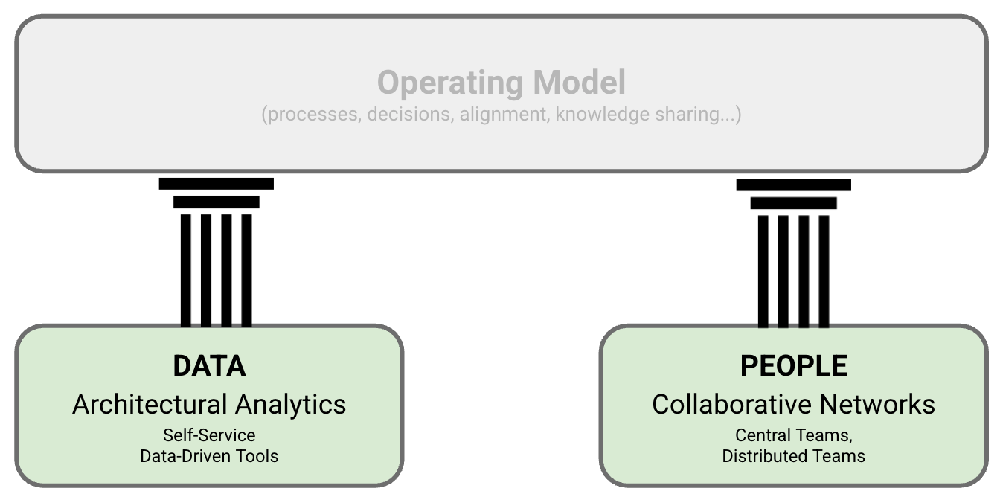

Grounded Architecture Framework: Foundations

IN THIS SECTION, YOU WILL: Get an overview of the Grounded Architecture framework: Lightweight Architectural Analytics, Collaborative Networks, and Operating Model.
KEY POINTS:
- I introduce three elements of Grounded Architecture Framework: Lightweight Architectural Analytics, Collaborative Networks, and The Operating Model as an approach to setting organizational structures for a modern IT architecture practice.
- Prioritizing people interactions and data over processes and tools, Grounded Architecture aims to connect an architecture practice to all organizational levels as an antidote to the “ivory tower” architecture.
In this section of the book, I will introduce the Grounded Architecture framework—my practical approach to establishing an effective and scalable architecture practice within complex organizations.
I chose the name Grounded Architecture intentionally. It highlights the need to avoid creating an “ivory tower” architecture practice—one that is disconnected from the daily realities of the business. In a fast-moving, global, and diverse environment, such disconnection is not only inefficient but also dangerous.
The Grounded Architecture framework is designed as a pragmatic and adaptive solution. Its aim is to keep architecture deeply rooted in the organization, prioritizing people’s interactions and real-time data over rigid processes and cumbersome tools. The goal is to embed architecture across all levels and parts of the organization, serving as an antidote to traditional, top-down approaches that often fail to make a meaningful impact.
 Figure 1: The Grounded Architecture framework: the foundations.
The Grounded Architecture framework consists of three core elements (see Figure 1):
- Lightweight Architectural Analytics (Data)
- Collaborative Networks (People)
- The Operating Model (which will be covered in a later section)
Lightweight Architectural Analytics
This part is a system of tools and resources that provides architects with a real-time, curated view of the organization’s technology landscape. It enables data-informed decision-making at every level.
For more information, refer to the Lightweight Architectural Analytics section.
Collaborative Networks
These networks connect everyone involved in architecture throughout the organization—from central teams to embedded architects and tech leads. They are essential for ensuring that architectural decisions are relevant, actionable, and aligned with actual needs.
See the Collaborative Networks section for more details.
The Operating Model
The Operating Model ties everything together. It introduces structures, routines, and roles that connect people, data, and decisions into a cohesive, collaborative, and impact-driven practice. We will explore this in a dedicated section later in the book.
Now that we have completed a high-level overview of the Grounded Architecture framework, let’s dive deeper into each of its elements and see how they come to life in practice.
Grounded Architecture Framework: Foundations |